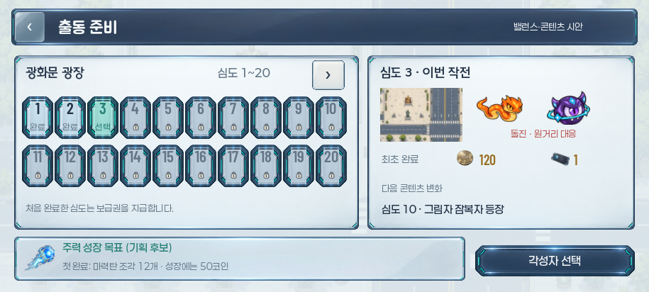
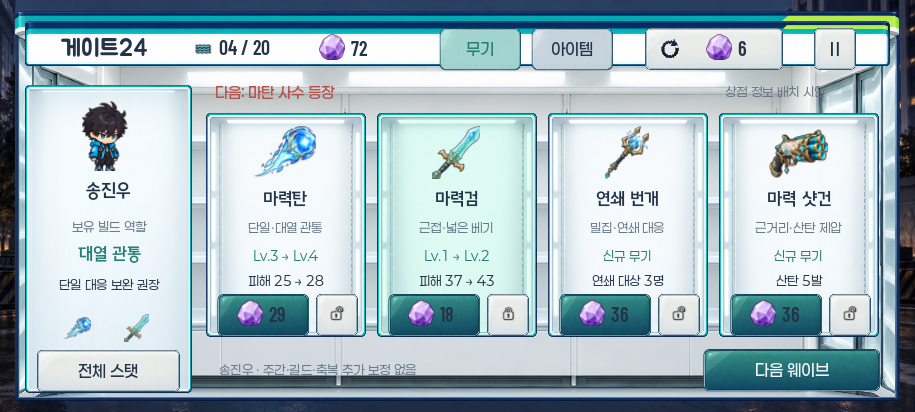
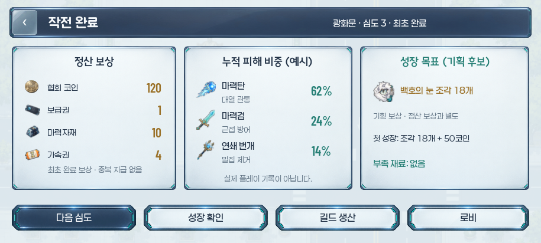

이미 있는 선택을 연결합니다
각성자 4명, 무기·설치물 10종, 아이템 55종, 적 19종이 있습니다. 현재는 광화문 한 맵을 반복하며 심도 10·20에 콘텐츠 변화가 생깁니다. 새 종류를 늘리기 전에 효과와 성장 경로를 정리할 필요가 있습니다.
- 도전 선택
- 빌드 구매
- 정산·성장
- 다음 출동
검토용 독립 시안
이 화면은 승인된 PNG·폰트·기존 원화를 재사용한 합성 예시입니다. 새로운 배치, 계정 목표, 지정 조각 보상과 개선 후 효과는 기획 후보입니다.
실제 게임의 코드·수치·보상·사용자 저장에는 연결하지 않았습니다. 정적 계산을 실제 클리어율이나 플레이 난이도로 해석하지 않습니다.
01 · 이번 출동에서 무엇을 할까
출동 준비 — 위협과 성장 목표
숫자 배율에 더해 대표 위협과 대응, 계정 최초 보상 여부, 다음 콘텐츠 변화를 확인합니다. 목표를 고른 뒤 다음 출동의 편성을 결정합니다.


심도 화면의 정보가 적 배율 중심이며, 21 이후를 선택할 경로가 없습니다. 특정 축복을 목표로 모으는 초기 경로도 약합니다.
이번 구간의 위협과 다음 변화가 보입니다. 선택한 목표에 맞춰 무기·축복을 바꾸며 다음 출동을 준비합니다.
심도 페이지, 계정 최초 완료 표기, 위협·콘텐츠 변화 설명, 지정 목표와 확보 경로를 연결합니다. 목표 보상은 별도 승인 대상입니다.
02 · 지금 무엇을 사야 할까
게이트24 — 구매 이유와 실제 변화
무기·아이템 진열과 잠금·리롤은 유지합니다. 다음 위협과 현재 빌드를 함께 보고, 신규 무기와 강화 중 어떤 선택이 도움이 되는지 판단합니다.



구매 뒤 실제로 무엇이 달라지는지, 다음 위협에 어떤 선택이 유효한지 연결이 약합니다. 일부 최종 강화와 분기 효과는 구현부터 정리해야 합니다.
보스 대응·군집 정리·근접 방어 등 현재 빌드의 역할을 읽고 선택합니다. 분기는 수치뿐 아니라 사용 상황과 교환 조건으로 비교합니다.
강화 곡선·폭격 반복·표창 범위·설치물 지속 효과를 먼저 정리합니다. 이후 실제 계산값을 구매 전후 비교와 위협 설명에 연결합니다.
03 · 이 판이 다음 판에 무엇을 남겼을까
작전 결과 — 정산과 다음 행동
전투 성과와 실제 정산을 확인하고, 선택한 성장 목표의 진척을 읽습니다. 다시 도전하거나 편성·성장·생산을 바꾸는 행동을 바로 고릅니다.


결과에는 피해와 보상이 있지만, 목표 성장을 위해 무엇이 부족하고 어디로 가야 하는지 한 번에 파악하기 어렵습니다.
완료와 실패 모두 다음 행동을 선택합니다. 보상·목표·성장 비용을 구분해 코인을 어디에 쓸지 직접 판단합니다.
실제 정산 결과와 성장 요구량을 읽는 표시, 목표 진척, 화면 이동을 연결합니다. 지급은 결과 표시와 분리하고 계정 목표의 중복 수령을 막아야 합니다.
DEVELOPMENT ORDER
개발은 이 순서로 제안합니다
현재 선택의 효과가 정확해야 비교 화면과 콘텐츠 판단도 의미가 있습니다. 작업별 근거·규모·완료 기준은 전체 보고서에 정리했습니다.
| 순서 | 핵심 작업 | 플레이어에게 남는 변화 |
|---|---|---|
| P0 | 최종 강화·분기·지속 효과·리롤 허가·심도 접근 정리 | 구매와 설명에 맞는 효과, 다음 심도로 가는 경로 |
| P1 | 작은 성장의 실제 효용, 지정 목표와 조각 확보 경로 | 한 세션 안에서 확인할 수 있는 진척과 다음 목표 |
| P2 | 웨이브별 주역 적, 캐릭터 행동 차이, 빌드와 아이템 역할 | 같은 콘텐츠로 다른 대응과 선택을 경험 |
| P3 | 심도 25·30·40 전술 변화와 후속 서울 지역 설계 | 수치 상승과 함께 새로운 전투 목적이 등장 |
확인한 범위와 사용자 확인 항목
현재 코드 읽기정적 수급·효과 계산독립 시안 렌더링
순정 첫 진행, Lv.9→10 강화, 빌드별 보스 대응, 실패 후 성장, 심도 21 접근은 후속 구현 뒤 사용자 플레이로 확인할 항목입니다. 자동 테스트·전체 빌드·실제 플레이·실기기 QA는 수행하지 않았습니다.